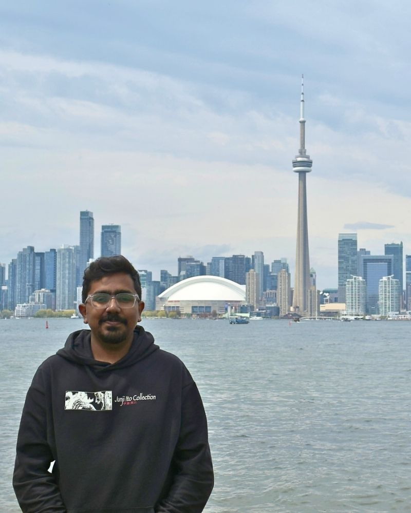
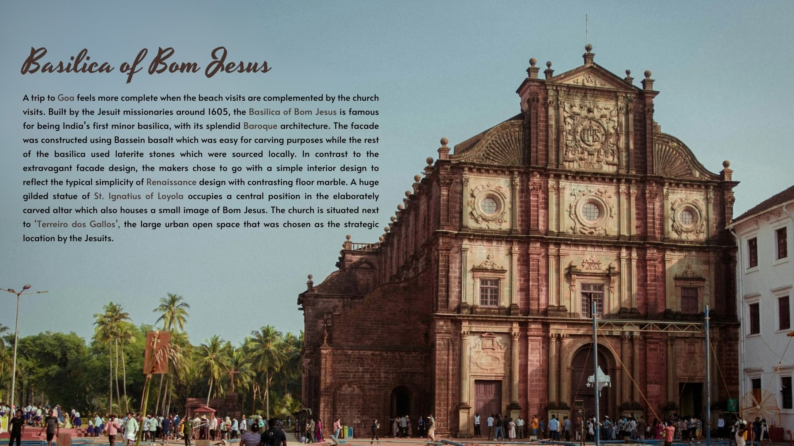
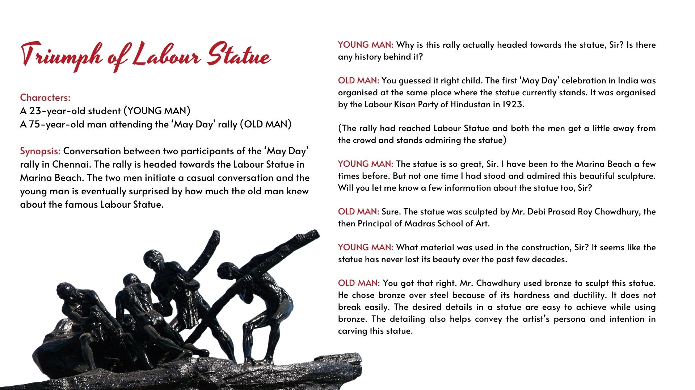
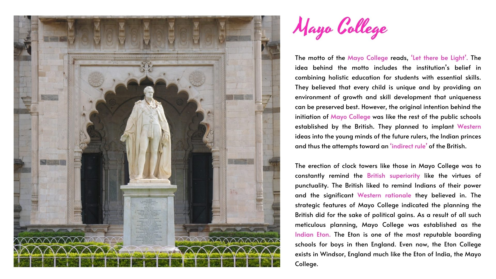

SEO and conversion copy
14%lift in search-to-booking conversion
Turning high-traffic listings into better converters
Headout Museo Ferrari and 170+ travel pages
Read more about Turning high-traffic listings into better converters📍 Based in Toronto 🍁
Let's talkThe numbers story
lift in search-to-booking conversion

I've written for travel, tech, B2B, education, nonprofits, and the arts, sometimes all in the same month.
I’ve written for travel, tech, B2B, education, startups, non-profits, and the arts and heritage, sometimes all in the same month.
SEO and conversion copy
Headout Museo Ferrari and 170+ travel pages
Read more about Turning high-traffic listings into better convertersMulti-channel campaign
Panorbit Reliance's The Ultimate Pitch Season X
Read more about A two-month campaign for a national B-school competitionLong-form and editorial
Panorbit MCRC Annual Report 2023–24
Read more about Turning a year of research into a story worth readingIn-house brand content
Panorbit Instagram, blog, eBooks, and case studies
Read more about Building an agency's voice from the insideMore work
Wrote grant proposal sections, sponsor pitches, and promotional copy for a fundraiser that pairs live music with online digital safety, working with marketing, design, and creative teams to keep one voice across every piece.
New pages and rewrites for 20+ cities, each built on keyword research and careful fact-checking.
Planned the calendar, wrote captions and reel scripts, interviewed founders, and shaped long-form videos into reels and shorts. The content buckets I created, from reading recommendations to founder mantras, continued after I moved on.
Wrote the full website for Adavi, a Soliga community brand bringing forest produce to market, and key pages for Chiratae Ventures, from the firm's story to its ESG commitments.
Turned research on 24 heritage sites into voiceover and conversational stories, and was named Star Performer of the Month in September 2022.



Outside work, I write about films, books, and the moments they stay with me. Most of it lives on Zigarthanda, my newsletter and Instagram page since 2020.
“Two movies. Two fictional fathers.”Desi Dad Dichotomy, ft. Vaaranam Aayiram and Udaan Read the essay → Personal essay Grief Is a Late Sunset
A personal essay on grief and the way it lingers.
SubstackRead → Personal essay Some People Summon Themselves Into Our LivesA book, a film, and a seagull in three days, and the writer who connected them all.
India Lost and FoundRead → Film analysis The Rain in Wong Kar-wai's FilmsHow rain carries the mood and the longing across Wong Kar-wai's films.
InstagramRead →Frank Herbert's novel and Denis Villeneuve's film, side by side, across three posts.
Instagram 1 2 3A review and a recommendation for the show that turned a riches-to-rags story into a warm one.
InstagramRead →